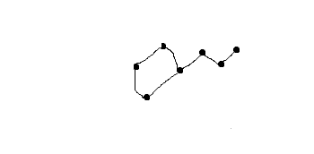

Karlavagnen
Karlavagnen är en stjärnbild på himlen. Den är jättegammal. Den ser ut som en vagn. Karl som bilden är uppkallad efter har inte synts till på många år.
Det är en av de kändaste stjärnbilderna. Alla känner till den efter radioprogrammet med samma namn. Precis som att karlavagnen sänds på natten så syns stjärnorna också på natten.
| Tid | Plats |
|---|---|
| 2024-10-08 | Norra halvklotet |
| 2024-10-07 | Norra halvklotet |
| 2024-10-06 | Norra halvklotet |
| 2024-10-05 | Norra halvklotet |
| 2024-10-04 | Norra halvklotet |
| 2024-10-03 | Norra halvklotet |